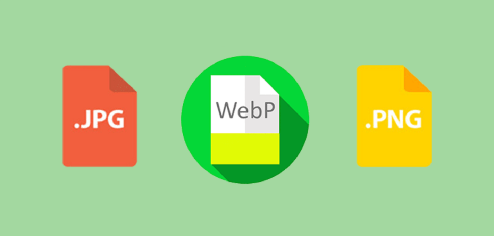
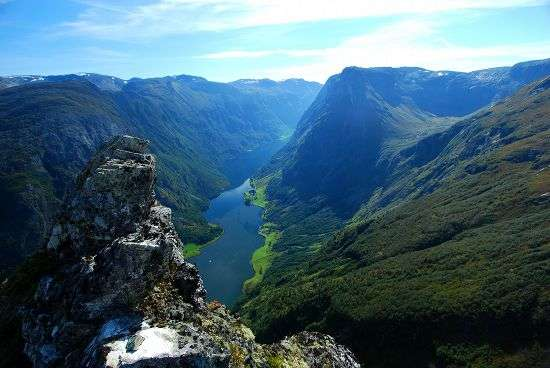

WebP — это формат файла, разработанный компанией Google в 2010 году. Его особенностью является продвинутый алгоритм сжатия, позволяющий сократить размер картинки без видимых потерь в качестве.
Да, другие форматы тоже поддерживают сжатие, но технологии, стоящие в основе WebP, куда прогрессивнее. И если сравнивать WebP с конкурентами в соотношении степени сжатия к качеству картинки, то разработка Google одержит уверенную победу.
В среднем вес картинок сокращается на 25–35%, что позволяет вебмастерам размещать на сайтах больше изображений, не тратя впустую драгоценное пространство на жестком диске арендованного VDS.
При разработке формата сотрудники Google использовали те же методики сжатия, что используются в компрессии кодеков VP8.
Естественно, основное преимущество — это размер. Сокращение размера положительно влияет сразу на четыре аспекта работы в интернете:
Но говорить о преимуществах WebP проще в сравнении с другими форматами.
JPEG — формат, отлично подходящий для изображений с большим количеством цветов. Он мало весит и имеет приемлемое качество, из-за чего обрел столь большую популярность среди пользователей.
Главный недостаток JPEG — заметная потеря в качестве и детализации из-за недостаточно продуманных алгоритмов сжатия. Это особенно заметно при приближении или когда у картинки изначально не слишком высокое разрешение.
У WebP качество картинки практически не теряется. Если ознакомиться с галереей Google, то станет понятно, что отличить их формат от высококачественных JPEG практически невозможно. Это видно только по размеру файлов.
Картинка в формате webp. 30 кв
Картинка в формате jpeg. 32 кв

На данных картинках разница между форматами видна. На картинке в формате jpeg появляется зернистость, некоторые детали изображения размыты. Визуально в данном сравнении выигрывает картинка в формате webp. При сравнении других изображений, при одинаковом размере файла, так же была замечена повышенная зернистость и плохая детализация формата jpeg.
Картинка в формате webp. 172.82 KB

Картинка в формате jpeg. 251.03 KB

У WebP алгоритм компрессии продуман более тщательно, и если взять изображения примерно одинакового качества (с равными показателями пикселизации), то файл в формате WebP будет «весить» меньше.
PNG — формат, ставший золотым стандартом и сумевший сохранить идеальный баланс между качеством и весом. Он подходит для изображений с логотипами или некрупным текстом. Там, где нужна высокая детализация.
Но речь идет о графике. С фотоснимками PNG справляется хуже более узкоспециализированных расширений. К тому же PNG заметно тяжелее того же JPEG даже после компрессии (хоть и сохраняет высокое качество).
Картинка в формате webp. 104 КВ
.webp "webp")
Картинка в формате PNG.123 КВ
.png "PNG")
Картинка в формате webp.
Картинка в формате PNG.

На данных картинках, при одинаковом размере, однозначно выигрывает формат webp. Так,чем сильнее сжат файл PNG, тем заметнее становятся огрехи изображения, особенно при сильном увеличении картинки. Что и видно выше.
Картинка в формате webp.

Картинка в формате PNG.
 (1).png "PNG")
На данных иллюстрациях визуально, если не увеличивать их, разницы не видно. При увеличении видно, что на картинке в формате PNG появляются какие-то размытые цветные полоски, картинка более мыльная. Также, при сжатии иллюстрации в формате PNG до размеров иллюстрации в формате webp, качество было снижено до 34%. (при конвертации в webp сохранилось 100% качество от изначальной картинки, размер которой составлял 1.19МВ в PNG)
WebP умеет сжимать простую графику не хуже PNG, даже несколько выигрывая в размерах при одинаковой цветопередаче и уровне детализации.
Поддержка данного формата среди браузеров и веб-приложений постепенно растет. Сейчас с WebP не возникает проблем ни в Google Chrome, ни даже в Safari. Но остались сайты и программы, которые все еще не знакомы с этим расширением картинок. Поддержка в браузере Apple появилась не так давно, а в Internet Explorer не появится никогда.
А еще WebP-файлы зачастую нечем открывать на компьютере. Поэтому некоторые пользователи Windows и Linux негодуют, когда пытаются скачать картинку через Google Chrome, а получают файл с невнятным расширением, который нельзя открыть.
В случае с плагинами и CMS все понятно. Там есть графические интерфейсы для загрузки изображений. С кодом тоже нет сложностей. можно встраивать в HTML-разметку как «обычные» изображения – через тег ‹img› Правда, только для поддерживаемых браузеров.
В случае с неподдерживаемыми придется добавить в разметку элемент и внутри него прописать дополнительные источники изображений со всеми расширениями. Это делается через тег ‹source srcset=“ссылка на картинку" type=”image/формат картинки"›. В CSS WebP добавляется через параметр background-image: url (ссылка на картинку с нужным расширением).
На этом все. В формате WebP нет ничего страшного. Обычные картинки, просто не везде поддерживаются. Отсюда и некоторые сложности в работе, но совсем скоро эта проблема исчезнет и WebP окончательно станет веб-стандартом.